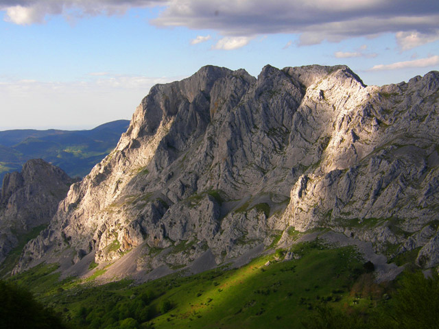

Espectacular cumbre del macizo de Anboto, con la cual forma un macizo
perfectamente diferenciable dentro de las Durangaldeko Haitzak.Presenta importantes precipicios hacia las dos vertientes,especialmente hacia el Sur,
cuyo acceso queda limitado a los escaladores.
En esta vertiente Sur destaca una gran concavidad conocida precisamente
con el nombre de La Cóncava.
|
← Alluitz
 |
Fijando detalladamente la mirada sobre la siempre sorprendente mole
calcárea de Untzillatx ( 934 m ) se descubre con inquietud que alberga otras pequeñas cimas monolíticas en su seno.
La torre de Urrestei ( 625 m ) es una de las más destacadas, vigilando las placas de la Gran Diagonal, vasta vira que desde Atxarte corona la brecha de Leureta ( 829 m ).
Precisamente en la vertical de esta escotadura rocosa se eleva Saukuko gane o Saukuko puntie ( 865 m ),
otra peña aislada, muy poco ascendida pese a su indudable atractivo y
contar con una vía normal que se reduce a salvar pequeñas dificultades. |